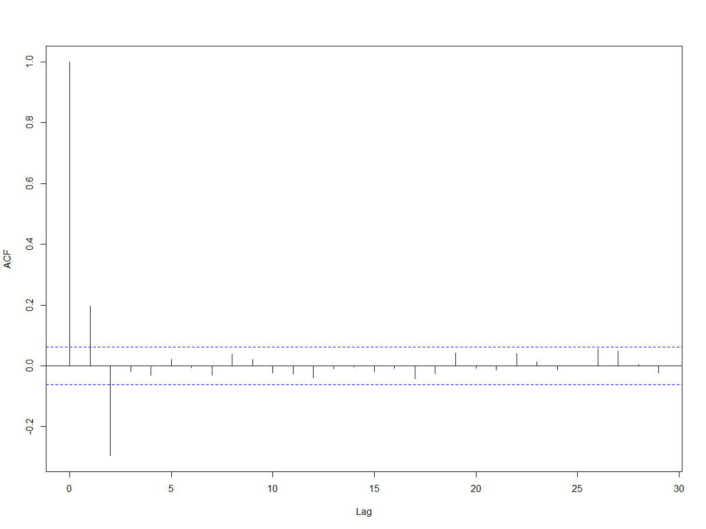
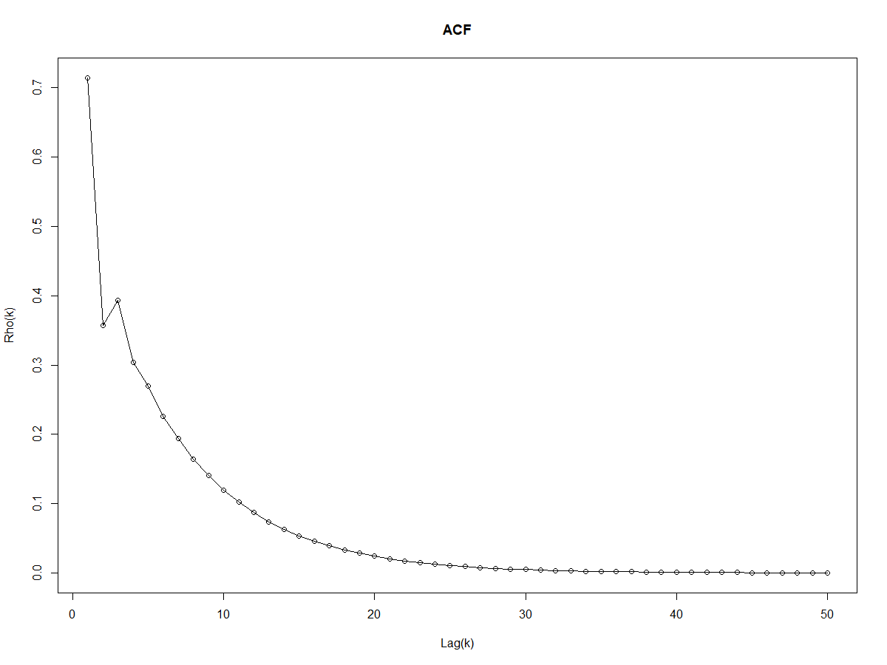

Kumar Shantanu (M.Sc 2019)
Question 1
(i) Define the notion of Second Order Stationarity (SOS) and explain why this assumption is necessary to estimate the characteristics of a stochastic process.
To understand the notion of second order stationarity, we must first understand the concept of strict stationarity.
The probability distribution associated with \(t\) observations \(z_1, z_2, \ldots z_t\) made at any time points \(1, 2, \ldots , t\) is the same as that of the t observations \(z_{1+k}, z_{2+k}, \ldots , z_{t+k}\), made at times \(1 + k, 2 + k, \ldots , t + k\), for any value of \(k\).
We have seen that the strict stationarity implies that the probability distribution is same no matter wherever we are in the time. However, it is highly ambitious to claim that we know the probability distribution function. The concept of weak stationarity or the second order stationarity is derived from this. The process is weakly stationary if the mean function as we look up and down the stochastic process and look at the average going on of each point, the mean function is constant.
Hence under the second order stationarity, we are concerned with only the first two moments of the time series. In line with this approach we define a time series \(\{z_t\}_{t = -\infty}^{t = \infty} \) to be weakly stationary or second order stationary if:
- The expected values of \(z_t\) are the same for all \(t\).
- The variance of \(z_t = \sigma^2_z < \infty\) is same for all \(t\).
- The covariance between any two time points will depend only on the time differences and not on time itself.
Stationarity is important for the purpose of estimation, if the mean or variance or covariance of a time series is not staying the same throughout time, then it's not going to be possible to estimate any parameters because they're changing.
(ii) Derive the auto-correlation function \(\rho(k)\) \(k = 0, 1, 2, 3, · · · \) of a MA(2) process and represent it graalphacally.
Let a MA(2) process be given as: $$ X_t = \beta_0 \epsilon_{t} + \beta_1 \epsilon_{t-1} + \beta_2 \epsilon_{t-2} $$ Here \(\left\{\epsilon_{t} \right\}\) is a purely random process with \(E[\epsilon_{t}] = 0\) and \(Var[\epsilon_{t}] = \sigma_{\epsilon}^2\). $$ E[X_t] = E[\epsilon_{t} + \beta_1 \epsilon_{t-1} + \beta_2 \epsilon_{t-2}] = 0 $$ $$ Var[X_t] = Var[\epsilon_{t} + \beta_1 \epsilon_{t-1} + \beta_2 \epsilon_{t-2}] = \sigma_{\epsilon}^2 (\beta_0^2 +\beta_1^2+\beta_2^2) $$ Now the auto-covariance function \(\gamma(k)\) is given as: $$ \begin{aligned} \gamma(k) &= \text{Cov} \left(X_{t}, X_{t+k} \right) \\ &= \text{Cov} \left(\beta_{0} \epsilon_{t}+\beta_{1} \epsilon_{t-1} + \beta_{2} \epsilon_{t-2}, \beta_{0} \epsilon_{t+k}+\beta_{1} \epsilon_{t+k-1} + \beta_{2} \epsilon_{t+k-2} \right) \end{aligned} $$ When \(k > 0\), \(\gamma(k) = 0 \Rightarrow \rho(k) = 0 \)
When \(k = 0,1,2\) $$\gamma(k) = \sigma_{\epsilon}^2 \sum_{i=0}^{2-k} \beta_{i} \beta_{i+k}$$ $$ \Rightarrow \rho(k) = {{\sum_{i=0}^{2-k} \beta_{i} \beta_{i+k}} \over {\beta_0^2 +\beta_1^2+\beta_2^2}} $$ Note that when k = 0, \(\rho_k = 1\).
When \(k < 0\),\( \gamma(k)=\gamma(-k) \Rightarrow \rho(k)=\rho(-k)\)
Let \(\beta_0 = 1, \beta_1 = 0.5, \beta_2 = -0.4 \). The ACF for \(k = 1 \ldots 50\) can be plotted as:
R-code
z <-rnorm(n)
x.ma2 <-z[3:n]+0.5*z[2:(n-1)]-0.4*z[1:(n-2)]
acf(x.ma2, xlab="Lag", ylab="ACF", main="")
(iii) Use the Yule-Walker equations to provide a conceptual argument about the nature of the autocorrelation function of an AR(2) process and represent the autocorrelation function graphically.
Let an AR(2) process be given by: $$ x_{t}=\alpha_{1} x_{t-1}+\alpha_{2} x_{t-2}+\epsilon_{t} $$ Let us assume that this process is stationary and multiply \(x_t, x_{t−1}, x_{t−2}, . . .\) to both sides of the equation, take expectation and and then divide by the variance of \(x_t\) i.e. \(\sigma_x^2\).
Here \(\alpha\)s represent partial autocorrelations of an AR-process. If the given process is a true AR(2) process then every other partial autocorrelation i.e except \(\alpha_{1}\) and \(\alpha_{2}\) should be significantly equal to 0. Thus the partial autocorrelation of an AR(2) process will have a cut off after lag 2.
A convenient way to obtain these partial autocorrelations is through Yule-Walker equations.
We obtain the following set of equations, also called Yule-Walker equations: $$ \begin{aligned} 1 &=\alpha_{1} \rho(1)+\alpha_{2} \rho(2)+\sigma_{\epsilon}^{2} / \sigma_x^2 \qquad \ldots \mathrm{(I)} \\[10pt] \rho(1) &=\alpha_{1}+\alpha_{2} \rho(1) \qquad \ldots \mathrm{(II)}\\[10pt] \rho(2) &=\alpha_{1} \rho(1)+\alpha_{2} \qquad \ldots \mathrm{(III)} \\[10pt] \rho(k) &=\alpha_{1} \rho(k-1)+\alpha_{2} \rho(k-2) \quad \text { for } \quad k \geq 3 \qquad \ldots \mathrm{(IV)}\end{aligned} $$
\(\rho(1)\) can be first solved from the second equation: $$ \rho(1) = {\alpha_1 \over {1-\alpha_2}} $$ \(\rho(2)\) can now be solved from Eqn. \(\mathrm{III}\) which gives: $$ \rho(2) = {\alpha_1^2 \over {1-\alpha_2}} + \alpha_2 $$ Hence using the Yule-Walker equations, we can recursively calculate autocorrelations for higher values of \(k\). Let \(\alpha_1 = 0.5\) and \(\alpha_2 = 0.8\). The ACF for \(k = 1 \ldots 50\) can be plotted as:
Note that as \(k \to 50\), \(\rho(k)\) becomes 0.
R-code
alpha_2 = 0.3;
rho_1 = alpha_1 / (1 - alpha_2)
rho_2 = alpha_1 ** 2 / (1 - alpha_2)
rho = c(rho_1, rho_2);
k = c(1:50);
for (k in c(3:51) ) {
rho_k = 0;
rho_k = (alpha_1 * rho[k - 2]) + (alpha_2 * (rho[k - 3]));
rho <- append(rho, rho_k);
}
plot(k_d, rho, ,type = "o", xlab = "Lag(k)", ylab = "Rho(k)", main = "ACF")
Question 2
(i) Express \(X_t\) in terms of an infinite MA process and the give the first four coefficients i.e., till \(\epsilon_{t−3}\).
We have, $$ X_{t}=0.5 X_{t-1}+0.4 \epsilon_{t-1}+\epsilon_{t} $$ Let \(L\) represent the lag operator.
-
$$ \begin{aligned} L X_{t} &=X_{t-1} \\[10pt] L^{2} X_{t} &=X_{t-2} \\[10pt] & \vdots \\[10pt] L^{k} X_{t} &=X_{t-k} \end{aligned} $$
(ii) Express \(\epsilon_t\) in terms of an infinite AR process and the give the first four coefficients i.e., till \(X_{t−3}\).
From Eqn. \(\mathrm{II}\) we have, $$ \epsilon_{t} = {{{1-0.5 L} \over {0.4 L + 1}} X_t} $$ Note that, \( 1 \over {1+0.4 L}\) is the sum of infinite GP: \(1 - 0.4L + (-0.4L)^2 + (-0.4L)^3 \ldots \). $$ \epsilon_{t} = (1-0.5L) (1 - 0.4L + (-0.4L)^2 + (-0.4L)^3 \ldots) \epsilon_{t} $$ $$ = (1 - 0.9L + 0.36L^2 - 0.144 L^3) X_t $$ $$ \epsilon_{t} = X_{t} - 0.9 X_{t-1} + 0.36X_{t-2} - 0.144 X_{t-3} + \ldots \infty $$
(iii) Stationarity
Re-writing Eqn. \(\mathrm{I}\), $$ (1-0.5 L)X_t = (0.4 L + 1)\epsilon_{t}$$ So, the ARMA process will be stationary when the roots of \(1-0.5 L = 0\) lie outside the unit circle, $$ \Rightarrow L = {1 \over 0.5} = 2, \quad \text{since} \ |2| > 1 $$
Hence, the process is stationary.
Invertibility
Re-writing Eqn. \(\mathrm{I}\), $$ (1-0.5 L)X_t = (0.4 L + 1)\epsilon_{t}$$ So, the ARMA process will be invertible when the roots of \(1+0.4L = 0\) lie outside the unit circle
$$ \Rightarrow L = {1 \over -0.4} = -2.5, \quad \text{since} \ |-2.5| > 1 $$Hence, the process is invertible.
(iv) Will your answer to (iii) above change if the co-efficient of \(\epsilon_{t-1}\) is made 2.0 instead of 0.4? Explain briefly
The stationarity of the ARMA process only depends on the autoregressive parameters, and not on the moving average parameters (assuming that all parameters are finite).
When the coefficient of \(\epsilon_{t-1}\) is made 2.0 instead of 0.4
The Eqn. \(\mathrm{I}\) would become, $$ (1-0.5 L)X_t = (2 L + 1)\epsilon_{t}$$ So, the ARMA process will be invertible when the roots of \(1+2L = 0\) lie outside the unit circle
$$ \Rightarrow L = {1 \over -2} = -0.5, \quad \text{since} \ |-0.5| < 1 $$Hence, the process is not invertible.